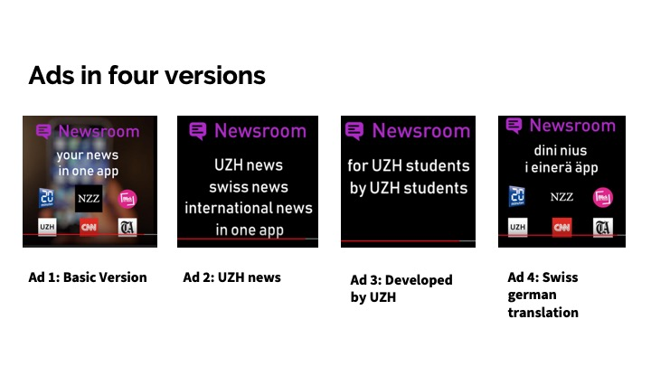
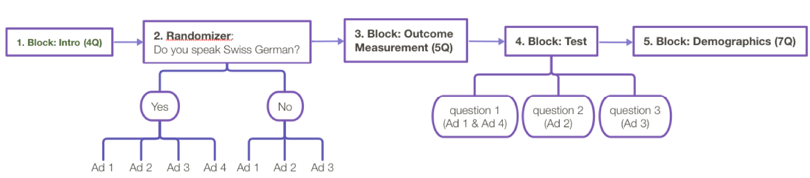
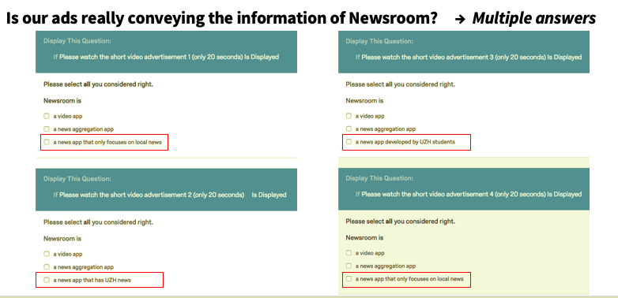
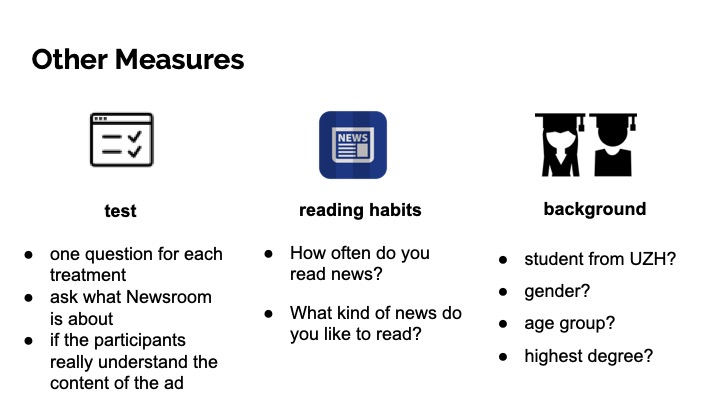

Hypothesis 01 · University affiliation
Does a university connection help?
UZH students who read news would find an ad more appealing when it stated that Newsroom was made at UZH.
Marketing experiments 2019
How do language and university affiliation shape an ad’s appeal?
A course project testing four advertisements for Newsroom, a news aggregation app developed by University of Zurich students.
Course project · University of Zurich

The starting point
Newsroom brought several news sources, including UZH News, into one app. We focused on UZH students and explored two ways of making its advertisements more relevant.
Hypothesis 01 · University affiliation
UZH students who read news would find an ad more appealing when it stated that Newsroom was made at UZH.
Hypothesis 02 · Language
Swiss German speakers would prefer a Swiss German ad to an English one, even if they understood English.
Lab experiment · Online survey
We randomly showed each participant one ad, tested the two hypotheses, and selected two versions to take into the field.
Swiss German speakers could see any of the four versions. Other participants saw one of the three English ads, with equal chances within each branch.
Participants rated the ad and answered a multiple-answer question to check whether they understood what Newsroom offered.
Background questions covered university affiliation, demographics, news-reading habits and attitudes toward reading news.

The sample. We received 121 responses over two days and used 111 valid responses in the analysis: 57 Swiss and 54 non-Swiss participants; 68 UZH students and 43 participants who were not UZH students.


What the survey suggested
The “made at UZH” message was not preferred by UZH students in this study.
The basic English and UZH News versions showed no statistically significant difference.
Ad attractiveness increased with participants’ demand for a news aggregation app.
The Swiss German version was more appealing to Swiss German speakers in the lab.
Field experiment · Instagram
We compared the basic English ad with its Swiss German version on Instagram.
We targeted people in Switzerland whose main language was German and who were interested in at least three newspapers. The campaign reached 59,000 people.
A question to carry forward
The project suggested testing audience language settings alongside location when choosing ad copy. The field result remained inconclusive, leaving this as a direction for further experiments.